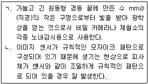
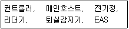
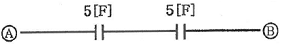

경비지도사-2차(기계경비기획및설계) (2017-11-18 기출문제)
1. 설치 대상과 방범용 감지기를 연결한 것으로 옳지 않은 것은?
- 문 - 자석 감지기
- 유리창 - 전자파 감지기
- 벽ㆍ천장 - 진동 감지기
- 통로ㆍ현판 - 적외선 감지기
(정답률: 알수없음)

2. 주위온도의 상승률이 일정수준 이상이 되는 것을 감지하는 열감지기는?
- 정온식 감지기
- 이온식 감지기
- 차동식 감지기
- 광전식 감지기
(정답률: 알수없음)
3. 물체 간에 작용하는 힘과 운동의 관계를 이용하는 감지기는?
- 충격 감지기
- 화재 감지기
- 연기 감지기
- 가스 감지기
(정답률: 알수없음)
4. 자동화재탐지설비 및 시각경보장치의 화재안전기준(NFSC 203)에 따라 연기감지기를 설치하지 않아도 되는 장소는?
- 20m 미만의 복도
- 린넨슈트
- 계단, 경사로 및 에스컬레이터 경사로
- 천장 또는 반자의 높이가 15m 이상 20m 미만의 장소
(정답률: 알수없음)
5. 전원주택의 창문을 통해 침입하려는 행위를 창 밖에서 감지하는 기기가 아닌 것은?
- 적외선 감지기
- 실외용 열감지기
- 초음파 감지기
- 자석 감지기
(정답률: 알수없음)
6. 지붕으로 접근하는 침입자를 감지하는 방식은?
- 차동식
- 자석식
- 리드스위치 방식
- 전기장 방식
(정답률: 알수없음)
7. 초음파 감지기 적용 대상에 해당하지 않는 것은?
- 장애물이 없는 공간
- 건물 내에서 이동을 감지하는 경우
- 벽으로 둘러싸여 있는 폐쇄된 좁은 공간
- 감시구역 내에 철문, 유리벽이 많이 설치되어 있는 공간
(정답률: 알수없음)
8. 수동형 감지기로 옳은 것은?
- 열선 감지기
- 적외선 감지기
- 셔터 감지기
- 초음파 감지기
(정답률: 알수없음)
9. 파원과 관측자 사이의 상대적 운동 상태에 따라 관측자가 관측하는 파(wave)의 진동수가 변화되는 현상은?
- 열전효과
- 초전효과
- 광전효과
- 도플러효과
(정답률: 알수없음)
10. 기계경비시스템의 종단저항에 관한 설명으로 옳지 않은 것은?
- 존(zone)의 종단에 설치하여 선로의 이상 상태를 감시한다.
- 감지기의 오작동을 방지하기 위하여 존(zone)의 종단에 설치한다.
- 회로에 종단저항을 설치할 경우에는 마지막 감지기에 해당하는 존(zone)에 병렬로 설치한다.
- 감지회로의 단선 또는 단락을 감시한다.
(정답률: 알수없음)
11. CCTV 촬상소자의 종류에 해당하지 않는 것은?
- CCD형
- MOS형
- FFT형
- CMD형
(정답률: 알수없음)
12. 다음에서 설명하는 용어는?

- ㄱ: 광각 렌즈, ㄴ: 고스트
- ㄱ: 프리즘 렌즈, ㄴ: 플리커
- ㄱ: 핀 훌 렌즈, ㄴ: 모아레
- ㄱ: 옵티컬 스캐너, ㄴ: 블루밍
(정답률: 알수없음)
13. CCTV 시공시 동축케이블 특성으로 인해 화면에 노이즈가 발생하는 문제를 해결할 수 있는 방법이 아닌 것은?
- 디지털 방식을 이용한 전송
- 절연기를 이용한 전송
- 광케이블을 이용한 전송
- 서로 다른 위상의 전원을 이용한 전송
(정답률: 알수없음)
14. CCTV 카메라 렌즈를 통해 모아진 빛을 받아 전기적 신호로 변환하는 소자는?
- ACD
- BCD
- CCD
- DCD
(정답률: 알수없음)
15. 동영상 압축 효율이 가장 높은 방식은?
- H.261
- H.263
- H.264
- MPEG-2
(정답률: 알수없음)
16. G20 정상회의가 개최된 COEX 같은 넓은 장소에서 1대의 TV 카메라 영상신호를 다수의 영상모니터에 공급할 때 사용하는 기기는?
- 영상분배 증폭기
- 순차 절환기
- 화면 분할기
- PAN/TILT
(정답률: 알수없음)
17. DVR 운용 시 장점에 해당하지 않는 것은?
- 여러 대 카메라 수용이 가능하다.
- 아날로그방식보다 연속으로 장시간 녹화가 가능하다
- 하드디스크의 용량에 따라 장기간 저장이 가능하다.
- 확장성이 제한적이어서 보안성이 우수하다.
(정답률: 알수없음)
18. 네트워크(Network) 카메라 특징으로 옳지 않은 것은?
- 통신망에 연결이 불가능하다.
- 원격으로 PAN/TILT 제어가 가능하다.
- 스마트폰으로 실시간 영상을 볼 수 있다.
- 한 대의 카메라에 다수의 사용자가 접속 가능하다.
(정답률: 알수없음)
19. 출입통제시스템의 구성기기에 해당하는 것으로 옳은 것은 모두 몇 개인가?

- 3개
- 4개
- 5개
- 6개
(정답률: 알수없음)
20. 콘덴서를 아래와 같이 직렬 접속할 경우 A와 B의 합성 값[F] 은?

- 2.5
- 5
- 10
- 25
(정답률: 알수없음)
21. 접지공사 분류에 해당되는 것으로 옳지 않은 것은?
- 제1종 접지
- 제2종 접지
- 특별 제3종 접지
- 제4종 접지
(정답률: 알수없음)
22. 전기사업법령상 일반용전기설비 점검자의 자격요건에 해당하지 않는 자는?
- 전기분야 산업기사 이상의 자격이 있는 사람
- 실무 경험이 2년 이상인 사람
- 전문대학에서 전기에 관한 학과를 졸업한 사람
- 고등학교에서 전기에 관한 학과를 졸업한 사람으로서 해당분야에서 2년이상 실무경력이 있는 사람
(정답률: 알수없음)
23. 피뢰기의 접지시설로 사용하고, 고압 및 특별고압의 전로에 시설하는 접지저항 값(Ω)은?
- 10
- 20
- 100
- 300
(정답률: 알수없음)
24. 다음 중 2차 전지에 해당하는 것은?
- 연축전지
- 망간전지
- 공기전지
- 수은전지
(정답률: 알수없음)
25. 계전기의 C접점에 해당하는 것은? (C: Common, NO: Normal Open, NC:Normal Close)
- NO 접점 또는 Make 접점
- 평상시 C와 NO가 떨어져 있다가 동작 시 붙는 접점
- 평상시 C와 NO가 붙어 있다가 동작 시 떨어지는 접점
- 평상시 C와 NO가 붙어 있다가 동작 시 C와 NO로 붙는 접점
(정답률: 알수없음)
26. 전원이 부하에 공급되어도 실질적으로 소비되지 않는 전력은?
- 피상전력
- 유효전력
- 무효전력
- 소비전력
(정답률: 알수없음)
27. 화재감지기 설치 기준으로 옳지 않은 것은?
- 실내로의 공기 유입구로부터 1.5m이상 떨어진 위치에 설치(차동식 분포형은 제외)한다.
- 천장 또는 반자의 옥내에 변하는 부분에 설치한다.
- 스포트형 감지기는 60°이상 경사되지 아니하도록 부착한다.
- 보상식 스포트형 감지기는 정온점이 감지기 주위의 평상시 최고온도 보다 20℃이상 높은 것으로 설치한다.
(정답률: 알수없음)
28. 저압전로의 절연 성능에서 절연저항 값이 0.2MΩ 에 해당하는 것은?
- 대지전압이 150V 이하인 경우
- 대지전압이 150V 초과 300V 이하인 경우
- 사용 전압이 300V 초과 400V 이하인 경우
- 400V 이상인 경우
(정답률: 알수없음)
29. 전압의 크기에 따른 분류에서 직류 750V 이하를 의미하는 것은?
- 저압
- 고압
- 특고압
- 특상고압
(정답률: 알수없음)
30. 배선설비의 선정에 사용되는 나전선과 비닐절연전선의 시설방법에 관한 설명으로 옳은 것은?
- 나전선은 전선관을 이용한다.
- 나전선은 애자를 이용한다.
- 비닐절연전선은 케이블 트레이를 이용한다.
- 비닐절연전선은 지지물에 직접 고정한다.
(정답률: 알수없음)
31. OSI(Open System Interconnection) 7계층(Layer) 참조모델(Reference Model)에서 데이터 링크 계층은 어디에 해당되는가?
- 1계층
- 2계층
- 3계층
- 4계층
(정답률: 알수없음)
32. 인터넷의 전송계층 프로토콜인 UDP(User Datagram Protocol)에 관한 설명으로 옳은 것은?
- 재전송 기능을 제공한다.
- 오류제어 기능을 제공한다.
- 실시간 서비스에 적합하다.
- 흐름제어 기능을 제공한다.
(정답률: 알수없음)
33. 시간 축을 타임 슬롯(Time Slot)으로 분할하여 사용자에게 할당하는 다중접근 방식은?
- CDMA
- CSMA
- FDMA
- TDMA
(정답률: 알수없음)
34. 반송파의 진폭과 위상을 동시에 활용하는 디지털변조 방식은?
- AM
- FM
- PM
- QAM
(정답률: 알수없음)
35. 정현파 신호 10cos(100πt+90°)의 주파수는 몇 Hz인가?
- 10
- 50
- 90
- 100
(정답률: 알수없음)
36. LAN의 프로토콜 구조에서 매체접근제어 기능을 수행하는 계층은?
- LLC
- MAC
- Physical
- Application
(정답률: 알수없음)
37. 10mW의 신호가 전송로를 통과한 후 lmW가 된 경우 전송로에서의 전력감쇠는 몇 dB인가?
- 1
- 10
- 20
- 30
(정답률: 알수없음)
38. 목적지 IP 주소를 참조하여 IP 패킷을 전달하는 장치는?
- 모뎀
- 허브
- 라우터
- 리피터
(정답률: 알수없음)
39. 다음 IP 주소(129.10.52.2) 중 첫 번째 8비트를 비트열로 나타낸 것은?
- 10000000
- 10000001
- 10000010
- 10000011
(정답률: 알수없음)
40. IPv4의 IP 패킷 헤더필드 중 IP 패킷이 목적지까지 전달되는데 거쳐야 할 최대 홉(Hop)수를 나타내는 것은?
- TTL
- Protocol
- Identification
- Fragment Offset
(정답률: 알수없음)